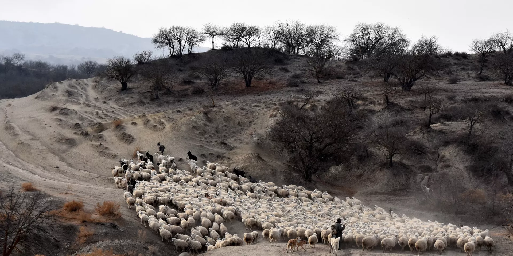
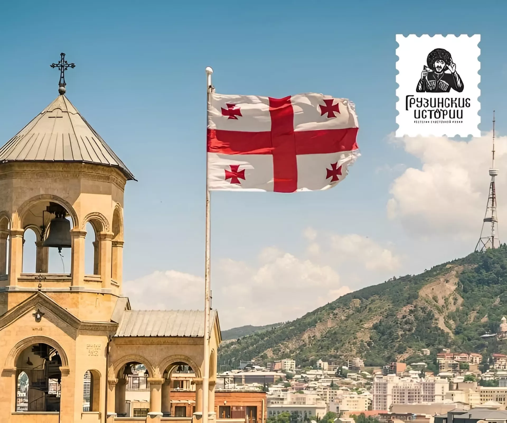
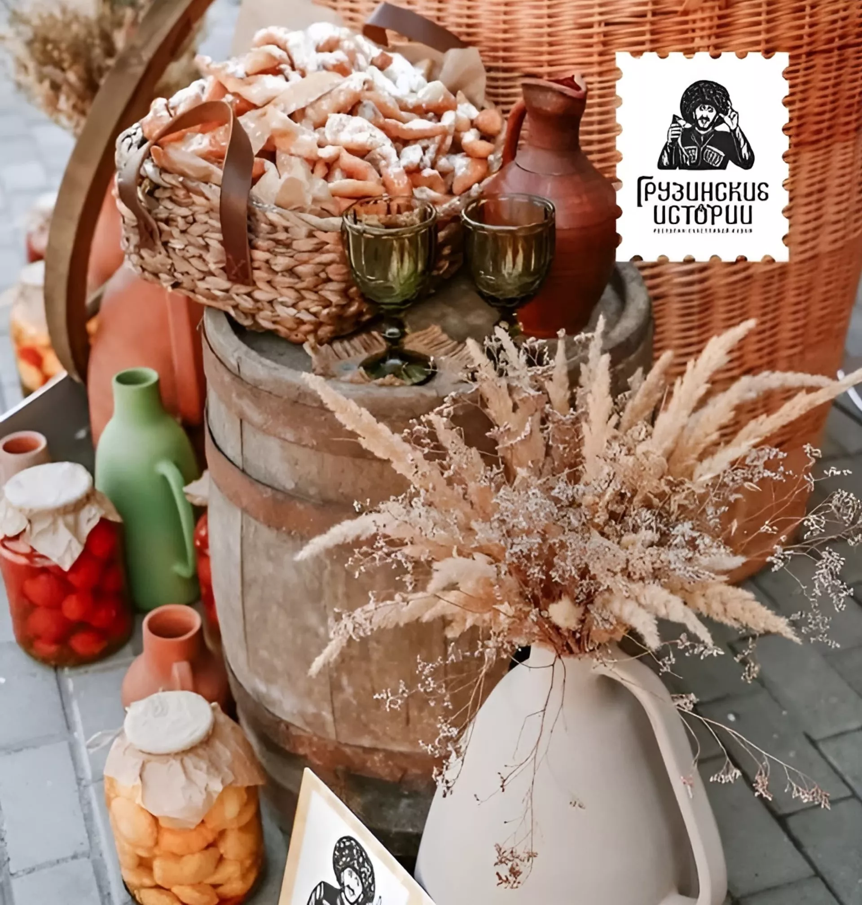
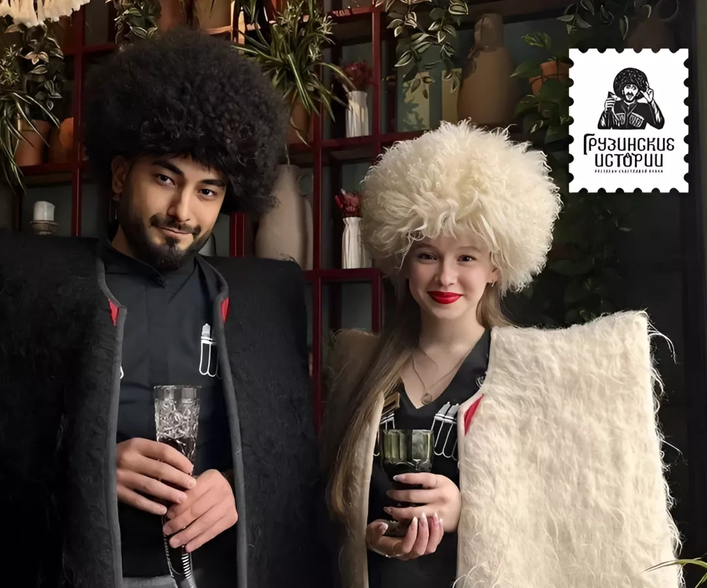
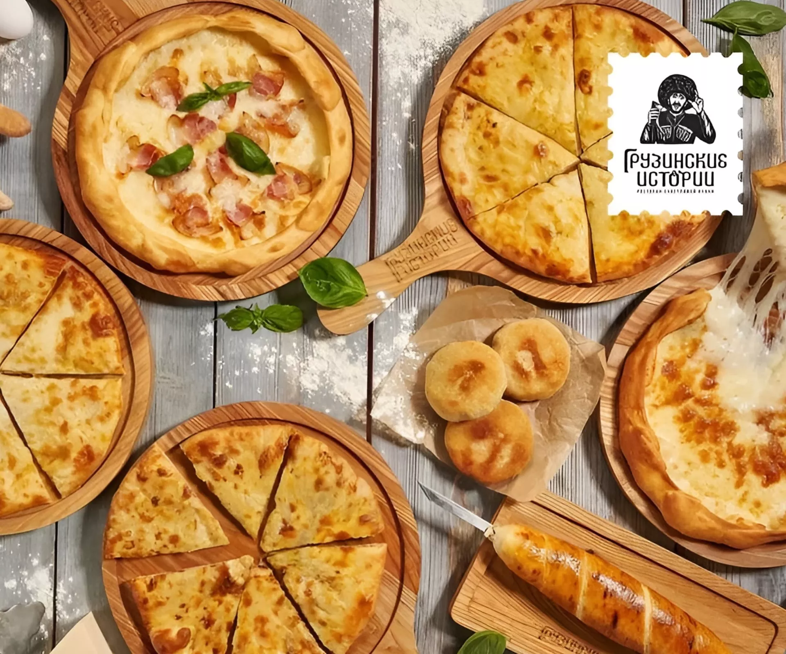
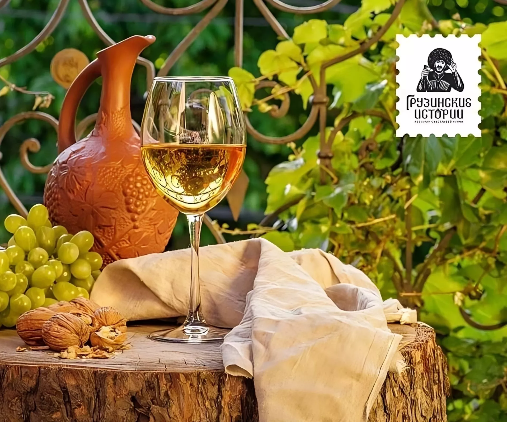

Легенда
Давным-давно Господь создал мир и стал распределять земли между народами. Всем досталась от Бога земля. Вот только грузины пришли последними и опоздали. Расстроился Господь и спрашивает у грузин: «Что же долго так вы шли?». Ответили ему грузины: «Мы — неспешный народ. Шли не торопясь, любовались вновь созданным миром, устраивали супру по дороге, пили вино и тосты говорили. Тосты у нас длинные, вот и не успели вовремя». «За что же Вы пили, дети мои?» — удивился Бог. Грузины честно ответили «За родину, матерей и Бога». А это, надо отметить, действительно одни из обязательных тостов в Грузии. Задумался Бог, но тут за грузин вступилась дева Мария: «Дай им земли, Господи, ибо они достойны». Согласился Бог и сделал грузинам щедрый подарок — отдал тот самый кусочек земли, который он приберег для себя.

Наша история
Первый ресторан открылся 4 года назад. За это время открылись еще 4 заведения. Компания готовится к экспансии России и за ее пределами. Традиционная грузинская кухня. Меню для Казани разрабатывал шеф Эмзари Беруашвили. Повара заведения придерживаются национальных рецептов и соблюдают традиции в приготовлении блюд. 26-27 место в рейтинге WHERETOEAT (WTE) в 2021 году занял ресторан «Грузинские истории» на улице Пушкина в Казани. Были отмечены незабываемая атмосфера ресторана, кухня, демократичные цены и интерьер. Высокий уровень лояльности гостей к сети ресторанов. Общая оценка 4,5 в отзывах на Google Карты и TripAdvisor. Общее число подписчиков аккаунтов всех городов в Instagram* — более 35 тысяч.

Наша задача
Погружать в сердце грузинского праздника, создавая впечатления. Время проведенное с гостем, говорят грузины, не засчитывается в прожитый возраст. Это справедливо не только для хозяев, но и пришедших к нам людей. Отдыхающие «Грузинских историй» оказываются между моментами прошлого и будущего, не чувствуя времени и проживая праздник всем сердцем.
Десертное меню
Наша кухня
Кухня, насыщающая душу. Грузинская кухня — история не только про еду. Искреннее южное гостеприимство образовало союз с вековыми рецептами блюд из натуральных продуктов и семейными историями, передающихся от поколения к поколению именно на застольях. Грузинская кухня впитала в себя лучшие кулинарные приемы соседей, но сохранила свою основу — любая трапеза должна быть праздником. Это сохраняется в любом заведении: блюда разные, а настрой всегда добродушно одинаков. Но еда в «Грузинских историях» — основной язык, на котором ресторан «говорит» с гостем. Через титульный продукт и его подачу транслируются коммуникационные идеи, разрабатывается сезонное меню и организуются мероприятия.

Наша цель: Сихарули
В человеке остается все, что он видел в жизни и что чувствовал, говорил великий грузинский режиссер Резо Габриадзе. Испытывая счастье как можно чаще, пробуя его на вкус, вдыхая тонкий пряный аромат, человек наполняется сам и наполняет жизнь историями и воспоминаниями, не оставляя места для печалей. В датском языке слово hygge, в голландском koselig, в грузинском სიხარული [сихарули] — радость от теплоты, доброжелательности и принадлежности. А еще — от еды. Мало что в жизни может наполнить радостью так, как вкусная еда из свежих натуральных продуктов, главный ингредиент которой любовь. Именно ее повара «Грузинских историй» обязательно добавляют в каждое блюдо.